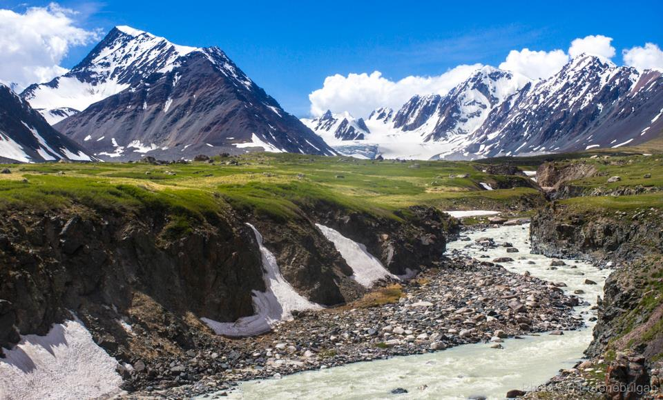

Алтай таван богд

Алтай таван богд уул нь Баян-Өлгий аймгийн Улаанхус сумын нутагт байрладаг ба түүний биологийн тогтоц төрөл зүйл нь Монголд байхгүй өвөрмөц. Энэ нь таван ноён оргилоос бүрддэг юм.
Алтай таван богд уул нь Баян-Өлгий аймгийн Улаанхус сумын нутагт байрладаг ба түүний биологийн тогтоц төрөл зүйл нь Монголд байхгүй өвөрмөц. Энэ нь таван ноён оргилоос бүрддэг юм.
Шаргалжуутын халуун рашаан нь байгалийн өвөрмөц сонин тогтоц, анагааж эмчлэх чадвараараа дэлхийд хосгүй рашааны нэгэнд тооцогддог. Шаргалжуутын рашаан сувилал нь Баянхонгор аймгийн Эрдэнэцогт сумын нутагт далайн төвшнөөс дээш 1500 метрт оршдог. Эндхийн булаг рашаануудын халууны хэмжээ, орчны урвал зэргээрээ ялгаатай боловч гидрокарбонат, карбонат, сульфатлаг натри голлож, халуун нь 43-95 хэмийн хооронд хэлбэлздэг.
Төв аймгийн Эрдэнэ суманд орших Алтан ташуур цогцолбор. Гурван мэргэдэд эхнэр, хүүхдээ алдсан Тэмүүжин тэднийг дайлахаар явах замдаа Цонжинболдог буюу одоогийн Алтан ташуур цогцолбор баригдсан газраас нэгэн ташуур олсон гэдэг. Энд морь унасан Чингис хааны 40 метр өндөр хөшөө байрладаг. 13 дугаар зууны цогцолбор нь Улаанбаатар хотоос зүүн тийш 56 км-т оршдог.
Сэлэнгэ аймгийн Баруунбүрэн сум, Манжийн төрийн бодлогоор буддын шашны нэгэн дурсгал болох шарын шашныг хүчтэй дэлгэрүүлэх үүднээс Манжийн хаан Энх-Амгалангийн зарлигаар Монголын төр шашны нэрт зүтгэлтэн анхдугаар Богд өндөр гэгээн Занабазарын дурсгалд зориулан 1727-1736 онд барьжээ.
Марко Поло Төв азийн нутгаар жуулчилсан тухайгаа “Тэр цөлөөр шөнө аялах үед хэн нэг хүний яриа сонсогдох, олон хөгжмөөр зэрэг тоглох мэт авиа сонсогддог” хэмээн бичсэн байдаг. Дорноговь аймгийн өмнөд захын Дуут элс харахад ердийн нэг манхан, оройд нь гараад хярыг нь барьж явахуйд хөлд өртөн нурах элс нисэх онгоц мэт хүнгэнэн дуугардаг..
Увч нуур нь далайн төвшнөөс дээш 753 метр өндөрт орших, 3350 ам дөрвөлжин километр нутагтай Монгол Улсын хамгийн том нуур юм. Увс нуур нь олон сая жилийн өмнөх аварга том тэнгисийн үлдэгдэл бөгөөд давсархаг, гүехэн устай. Увс нуур нь Их нууруудын хотгорын хойд хагаст оршдог. Увс нууранд Тэс, Нарийн, Хархираа, Түргэн, Сагил, Боршоо, Хөндлөн, Торхилог зэрэг том, жижиг 38 гол, горхи цутгадаг. Хан хөхийн нуруу нь Их нууруудын хотгор руу түрэн орж, Увс болон Хяргас нууруудын хотгорыг зааглана. Увс нуурын орчимд байгалийн бүх бүслүүр нэг дор байдаг учир ЮНЕСКО-гийн байгалийн өвд бүртгэгдсэн байдаг.